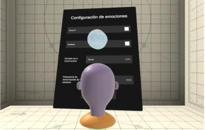
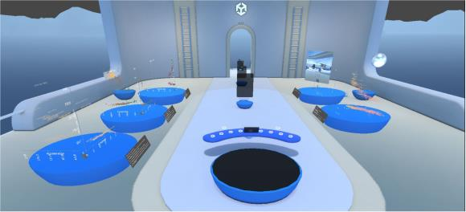
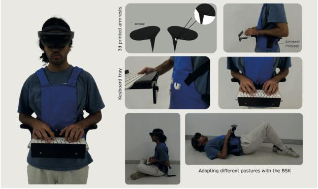

<style>
main h1 { font-size: 1.15rem; font-weight: 700; padding-bottom: .3rem; border-bottom: 1px solid var(--border); margin-bottom: .6rem; }
main h2 { font-size: 1.15rem; font-weight: 700; margin: 2rem 0 .6rem; padding-bottom: .3rem; border-bottom: 1px solid var(--border); }
main h3 { font-size: 1rem; font-weight: 600; margin: 1.5rem 0 .5rem; color: var(--dark); }
main p  { font-size: .95rem; line-height: 1.7; margin-bottom: .85rem; color: var(--dark); }
main ul { padding-left: 1.4rem; margin-bottom: .85rem; }
main ul li { font-size: .92rem; line-height: 1.65; margin-bottom: .3rem; color: var(--dark); }
main a  { color: var(--blue); }

.project-info { display: grid; grid-template-columns: auto 1fr; gap: .4rem 1.1rem; margin: .75rem 0 1.5rem; }
.project-info dt { font-weight: 600; font-size: .88rem; color: var(--muted); white-space: nowrap; padding-top: .1rem; }
.project-info dd { font-size: .88rem; line-height: 1.5; }
.team-list { list-style: none; padding: 0; margin: .5rem 0 1.2rem; display: flex; flex-direction: column; gap: .4rem; }
.team-list li { font-size: .9rem; display: flex; align-items: baseline; gap: .5rem; flex-wrap: wrap; }
.team-list .role { font-size: .78rem; color: var(--muted); font-weight: 500; }
.course-meta { font-size: .88rem; color: var(--muted); margin-bottom: 1.25rem; }

.finished-badge { background: #f3f4f6; color: #6b7280; border: 1px solid #d1d5db; border-radius: 20px; padding: .1rem .6rem; font-size: .72rem; font-weight: 600; display: inline-block; margin-left: .5rem; vertical-align: middle; letter-spacing: .02em; }

/* Figure styles */
.fig-row { display: grid; grid-template-columns: 1fr 1fr; gap: 1rem; margin: 1.25rem 0 1.5rem; }
.fig-wrap { margin: 1.25rem 0 1.5rem; }
.fig-row .fig-wrap { margin: 0; }
.fig-wrap img { width: 100%; border-radius: 6px; border: 1px solid var(--border); display: block; background: #f9f9f9; }
.fig-caption { font-size: .8rem; color: var(--muted); margin-top: .45rem; line-height: 1.45; }
.fig-caption strong { color: var(--dark); font-weight: 600; }
@media (max-width: 600px) { .fig-row { grid-template-columns: 1fr; } }

/* Publications */
.pub-list { list-style: none; padding: 0; margin: .5rem 0 1rem; display: flex; flex-direction: column; gap: .7rem; }
.pub-list li { font-size: .88rem; line-height: 1.55; padding-left: .9rem; border-left: 3px solid var(--border); }
.pub-list li .pub-venue { font-style: italic; }
.pub-badge { font-size: .7rem; font-weight: 600; background: #f0f7ff; color: var(--blue); border: 1px solid #bcd6f0; border-radius: 4px; padding: .05rem .35rem; margin-left: .3rem; white-space: nowrap; }
.software-badge { font-size: .7rem; font-weight: 600; background: #f5f0ff; color: #6741d9; border: 1px solid #c8b4f5; border-radius: 4px; padding: .05rem .35rem; margin-left: .3rem; white-space: nowrap; }
</style>

<main>
  <h1>Improving Collaboration and Mobility of Immersive Analytics Authoring Toolkits <span class="finished-badge">Completed</span></h1>

  <p class="course-meta">ANID – FONDECYT Iniciación &middot; <a href="../">Research</a></p>

  <dl class="project-info">
    <dt>Funding</dt>   <dd>ANID – FONDECYT Iniciación</dd>
    <dt>Project</dt>   <dd>N°11230349</dd>
    <dt>Duration</dt>  <dd>March 2023 – March 2026</dd>
    <dt>Budget</dt>    <dd>~$130K USD</dd>
    <dt>Role</dt>      <dd>Principal Investigator</dd>
  </dl>

  <h2>Team</h2>
  <ul class="team-list">
    <li>Leonel Merino <span class="role">Principal Investigator &middot; Pontifical Catholic University of Chile</span></li>
  </ul>

  <h2>Description</h2>
  <p>This project addresses a fundamental challenge in the adoption of immersive analytics: the gap between the physical environments where analysts need to work and the tools available for creating data visualizations in extended reality (XR). Existing authoring toolkits for augmented and virtual reality largely require desktop-bound workflows disconnected from the real-world spaces where visualizations are ultimately consumed. The project investigates how authoring tools can be redesigned to support <em>in-situ</em> authoring—allowing analysts to create and refine visualizations directly in the physical or virtual spaces where they will be used.</p>

  <p>A second thrust addresses multi-user collaboration during the authoring process itself. The project designs and evaluates novel interaction mechanisms—including real-time physiological sensing and avatar-based emotional state visualization—that allow multiple users to collaborate within a shared immersive environment while co-constructing analytical artifacts.</p>

  <h2>Results</h2>

  <h3>Emotional State Sharing in Collaborative Immersive Authoring</h3>
  <p>The project delivered <em>Emotions Mapper</em>, an end-to-end EEG-to-visualization pipeline that captures brain signals via a wearable Muse 2 headband, classifies them in real time into emotional proxies (joy, concentration, activation, calm), and broadcasts the resulting states to a shared immersive environment. States are rendered as visual cues attached to collaborators' avatars (Fig. 1), enabling participants to perceive emotional context while performing joint visualization authoring tasks.</p>

  <div class="fig-row">
    <div class="fig-wrap">
      
      <p class="fig-caption"><strong>Fig. 1a.</strong> Avatar displaying emotional state cues alongside the in-VR configuration interface, where users personalize visualization parameters such as cue size and update frequency.</p>
    </div>
    <div class="fig-wrap">
      
      <p class="fig-caption"><strong>Fig. 1b.</strong> Overview of the collaborative immersive analytics scene with multiple authoring spaces, where participants jointly build and explore data visualizations.</p>
    </div>
  </div>

  <p>Usability evaluation with 8 participants yielded an average System Usability Scale (SUS) score of <strong>73.75</strong>, confirming that real-time emotional visualization can be integrated into immersive authoring workflows. A dedicated experimental protocol was designed to measure the collaborative impact of cognitive-state sharing, comparing scenarios with and without shared affective cues during authoring sessions.</p>

  <h3>Mobile Authoring with the Body-Supported Keyboard</h3>
  <p>To free analysts from fixed workstations, the project designed the <em>Body-Supported Keyboard</em> (BSK): a wearable ergonomic support that integrates a Bluetooth keyboard into a 3D-printed body harness, enabling sustained text-based authoring in augmented reality while moving freely (Fig. 2). The system was integrated into the AVAR immersive analytics authoring toolkit, allowing users to construct and modify visualizations while standing, kneeling, walking, or adopting other postures in situ.</p>

  <div class="fig-wrap">
    
    <p class="fig-caption"><strong>Fig. 2.</strong> The Body-Supported Keyboard (BSK) prototype. Left: full wearable configuration combining a HoloLens 2 headset with a Bluetooth keyboard on a 3D-printed body harness. Right: participants adopting different postures — sitting, lying down, kneeling — during an immersive authoring session, demonstrating the mobility enabled by the BSK.</p>
  </div>

  <p>A controlled within-subjects study with <strong>20 participants</strong> compared mobile BSK authoring against a conventional standing-desk configuration. Results show task completion times and typing accuracy comparable to stationary setups, while mobility metrics confirmed significantly greater posture diversity in the wearable condition. The mean SUS score was <strong>74.5</strong>, indicating good usability and positive acceptance. The AVAR authoring toolkit developed in this project is publicly available.</p>

  <h2>Publications</h2>
  <ul class="pub-list">
    <li>Rojas-Stambuk, T., Sandoval Alcocer, J.P., Merino, L., Neyem, A. On the use of extended reality to support software development activities: A systematic literature review. <span class="pub-venue">Information and Software Technology</span>, 107999, 2026. <span class="pub-badge">WoS Q1</span></li>
    <li>Rahartomo, A., Merino, L., Ghafari, M. Metaverse security and privacy research: A systematic review. <span class="pub-venue">Computers &amp; Security</span>, 157:104602, 2025. <span class="pub-badge">WoS Q1</span></li>
    <li>Rojas-Stambuk, T., Gil-Gareca, L.F., Sandoval Alcocer, J.P., Merino, L., Moreno-Lumbreras, D. FlameGraph AR: Immersive Visualization of CPU Profiles in Augmented Reality. <span class="pub-venue">IEEE VISSOFT</span>, 2025.</li>
    <li>Rojas-Stambuk, T., Gil-Gareca, L.F., Sandoval Alcocer, J.P., Merino, L., Moreno-Lumbreras, D. Visualizing The Linux Kernel Performance with FlameGraph AR. <span class="pub-venue">IEEE VISSOFT</span>, 2025.</li>
    <li>Rahartomo, A., Merino, L., Ohshima, Y., Ghafari, M. The Dilemma of Privacy Protection for Developers in the Metaverse. <span class="pub-venue">IEEE VR Workshops (VRW)</span>, 2025.</li>
    <li>Hoff, A., Kilbak, T.H., Merino, L., Lungu, M. GitTruck@Duck: Interactive Time Range Selection in Hierarchy-Oriented Polymetric Visualization of Git Repository Evolution. <span class="pub-venue">IEEE ICSME</span>, 2024.</li>
    <li>Sandoval Alcocer, J.P., Merino, L., Fernandez-Blanco, A., Ravelo-Mendez, W., Escobar-Vel&aacute;squez, C., Linares-V&aacute;squez, M. A Developer's Guide to Building and Testing Accessible Mobile Apps. <span class="pub-venue">FSE Companion</span>, 2024.</li>
    <li>Sandoval Alcocer, J.P., Cossio-Chavalier, A., Rojas-Stambuk, T., Merino, L. An eye-tracking study on the use of split/unified code change views for bug detection. <span class="pub-venue">IEEE Access</span>, 2023. <span class="pub-badge">WoS Q2</span></li>
    <li>Freire-Pozo, D., Cespedes-Arancibia, K., Merino, L., Fernandez-Blanco, A., Neyem, A., Sandoval Alcocer, J.P. DGT-AR: Visualizing Code Dependencies in AR. <span class="pub-venue">IEEE VISSOFT</span>, 2023.</li>
    <li>Merino, L. AVAR (0.1). Zenodo, 2026. <a href="https://doi.org/10.5281/zenodo.18735850" target="_blank" rel="noopener">doi:10.5281/zenodo.18735850</a> <span class="software-badge">Software</span></li>
  </ul>

  <h2>Keywords</h2>
  <ul>
    <li>Immersive Analytics &middot; Authoring Tools</li>
    <li>Augmented Reality &middot; Virtual Reality</li>
    <li>Situated Visualization &middot; Mobile Interaction</li>
    <li>Collaborative Visualization &middot; Affective Computing</li>
    <li>Extended Reality &middot; Human-Computer Interaction</li>
  </ul>
</main>
